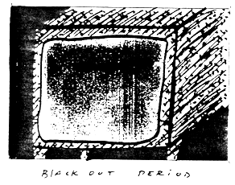

postcards
Why?


I was sad to hear that
HOW(ever)
is in its final year of publication. Why? Is it classic burn-out? There seems so much to publish these days, more so than ever, which is wonderful too. I've loved
HOW(ever)--don't want to put it in a final tense yet, i love it & am happy to renew my subscription (money order enclosed). Quite simply, it's been a wonderful companion, giving me not only a surprising vista of the range of avant-garde work being written by women in the States, but also a very much appreciated sense of our shared tradition in Alerts, Postcards, in the Ed's Notes. I must confess, i always read the back pages first--it's a kind of news that transcends the present, though it's always interwoven with that, given who's writing the Alert & what her relationship is to that work (which you always nicely document). And i want to add that that sense of companionship, both vertical & horizontal, is all the more appreciated as, at least here, the work of those of us who are writing, for lack of a better term, feminist post-modernism, continues to struggle against mis-reading, ignorance, disinterest--even from other women writers.
As you know,
HOW(ever)
has been a model for
(f.)Lip,
which Betsy continues putting out with Angela Hryniuk & several other women. It has also been a companion for us at tessera,
which is expanding & stabilizing. We are now an editorial collective of 5 women across Canada (Susan Knutson in Nova Scotia, Gail Scott in Montreal, Barbara Godard in Toronto, Kathy Mezei & myself in Vancouver). We have just produced our first issue on our own (i'll enclose a postcard flyer for it) on dialogues & conversations in women's writing. Having experienced incredible production delays through the financial difficulties or difficulties with their typesetters/printers our host magazines have had, we've decided to give up doing special guest issues & move into our own production with the help of Canada Council funding (we've just applied for a grant & so far have unofficial word of its approval). Our next 2 issues will be on translation & narrative.
Still, there's going to be a hole if
HOW(ever)
goes. . . though it will never really "go," having done so much.
 --letter excerpt from Daphne Marlatt
--letter excerpt from Daphne Marlatt
(tessera, no. 5, is available for $10, from Department of English, Simon Fraser University, Burnaby, B.C. V5A lS6, Canada.)
Dear Daphne,
Why end
HOW(ever)
after five volumes, six years? As you might imagine, the decision has been extremely difficult to make, provoked by major and unexpected depletions of time and energy for editing competing with the more private pull of one's own writing. Also, funding for our "modest proposal" has been nearly impossible, between an intentional page limitation and our peculiar hybrid of innovative poetry with feminist critical writing. However, there's been such a voiced disappointment among our readers that we are currently considering alternative solutions. Meanwhile, it is evident that women interested in new directions in writing are no longer isolated, urged on by the provocative legacy embedded in the texts of the modernist women preceding us. We've got a good start on building a much-needed community; the talent and invention of women poets is clearly burgeoning; and the once non-existent dialog among scholar/critics and innovative writers has warmed up. Surely there is more to come.

 --K.F.
--K.F.
•
A binary opposition of sorts


Dear HOW(ever):
Perhaps unintentionally, Rena Rosenwasser's somewhat negative overview of Louise Bogan (HOW(ever) January 1988) creates a binary opposition of sorts with the notes on Marianne Moore that precede and follow it. While it's true that for many years Bogan wished to distance herself from the spectre of the nineteenth century "wailing" poetess, this was obviously a love-hate relationship. As Gloria Bowles points out in her book on Bogan, Bogan eventually came to celebrate the unbroken line of feeling that she felt characterized the American female lyric tradition. Her own collection, The Blue Estuaries, is itself indebted to this distinctly "female" school of verse; in fact, in Bogan, the tradition, modulated by currents of Modernism, may reach its most consummate expression.
Consider, for starters, her oft-anthologized piece, "Women." Pitting two classically "feminine" attributes against one another--limited vision and emotional excess--Bogan moves from the (socially constructed) paucity of "Women have no wilderness in them" to the aural plenitude of "They hear in every whisper that speaks to them / A shout and a cry." Proscription yields to an excess beyond the ken of the practical, clean-cleft male world. Further, though we may initially assume men are privy to the wilderness denied women, Bogan perversely goes on to identify them with "so many crops to a field" and "clean wood cleft by an axe"--activities as tame in their own way as "eat(ing) dusty bread." If this is "life," women might just as well "let it go by"--though the poem can't quite tell us in favor of what.
Bogan's lyrics, then, may lend themselves to an (im)proper reading as well as any (Moore) obviously avant-garde text: "Do not guard this as rich stuff without mark / Closed in a cedern dark," Bogan cautions us in "Memory." It would be a pity for feminists to denigrate excellence--and ways of getting at it--in any form, when we're still endeavoring to piece together women's writing.

 --Deborah Woodard
--Deborah Woodard
•
Letter Excerpt


. . . Theresa Hak Kyung Cha evoking not only her own sense of utterance w/ rocks in her mouth, but of all women / making it possible for us to be in the white space behind the words, seeing that from such a perspective, vision is restored / "We are not swept away by fancy word games, by technical virtuosity--no, by a recognition / the veil of language lifts a bit & we are at another level of the view: something totally new but immediately a recognizable link to finding our own voice."
That's (in a mouthful) why HOW(ever)
is a wonderful publication; I & others will miss the tremendous work you've all done over the years. Many thanks. . . to your voices.

 --Julia Blumenreich
--Julia Blumenreich
•
Letter Excerpt


Have spent the last week at Beinecke over H. D. mss. of The Gift--God what a shock! The mis-editing of that work, as you know, is supposed to be bad--but when you actually see
it--it's quite overwhelming.
Most interesting to me were the Notes--three drafts--She did three drafts (50 pages each) of notes
--so careful, so lovely, a new way of thinking about notes--rather akin to Dickinson's variant readings for me--that open the text to new possibilities--only here no one even mentions there were
(are) notes!

 --Susan Howe
--Susan Howe

go to this issue's table of contents